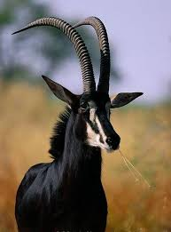

About me
Hi, I'm Alessandro Cipriano, a 22-year-old software development student with a passion for technology and making a positive impact. Currently pursuing my degree at BYU.Outside of coding, I'm an avid gamer who enjoys the challenge and creativity that video games offer. My faith is also a significant part of my life, and I find peace and purpose in regularly attending church. When I'm not gaming or at church, you'll likely find me deep in my studies, always eager to learn something new and expand my skills.
Giant sable antelope
The giant sable antelope or royal sable antelope (Hippotragus niger variani), also known in Portuguese as the palanca-negra-gigante, is a large, rare subspecies of the sable antelope native and endemic to the region between the Cuango and Luando Rivers in Angola. The giant sable antelope is the national symbol of Angola, and is held in a great regard by its people.